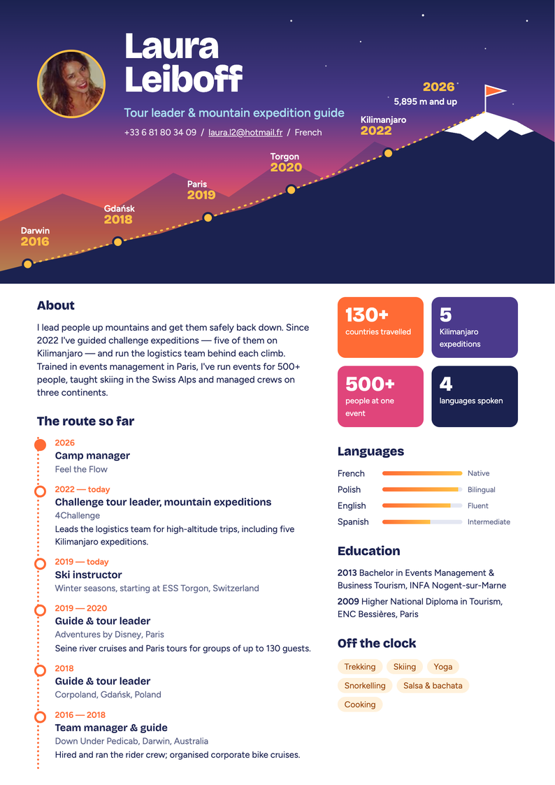
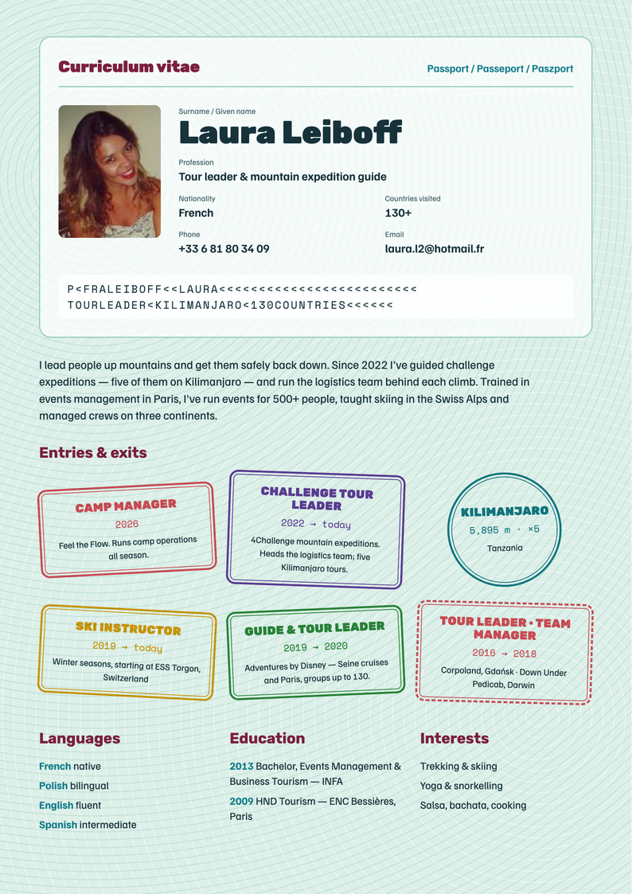
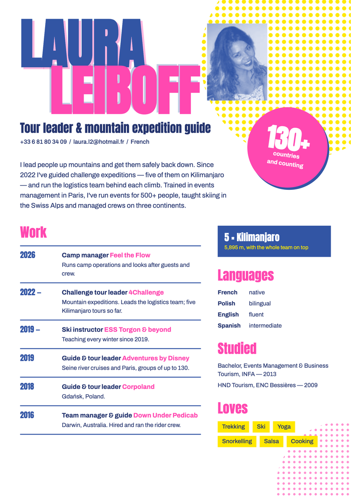
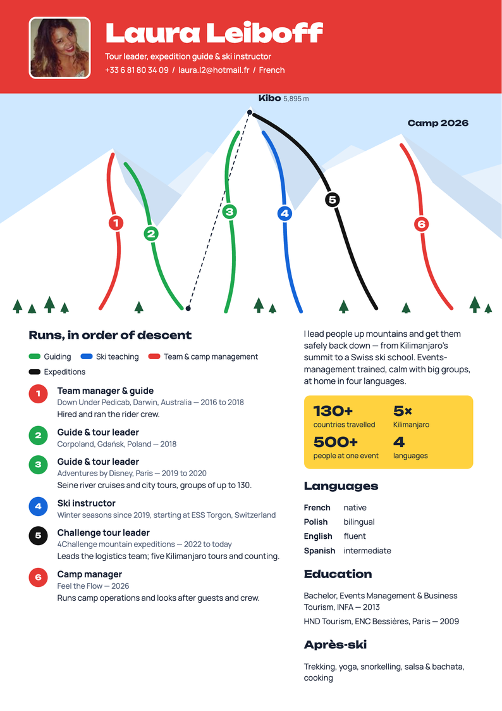

Laura Leiboff / Curriculum vitae
One CV, eight looks.
Tour leader, mountain expedition guide and ski instructor. Open any design to view it full size or save it as a PDF.

01↗
Terracotta editorial
Warm, personal and a little magazine-like.

02↗
Cobalt atlas
Confident type, bright blue and a clear experience timeline.

03↗
Forest field notes
Grounded, outdoorsy and quietly adventurous.

04↗
Lilac studio
Friendly color blocks with a modern, playful rhythm.

05↗
Summit
A sunrise climb through her career.

06↗
Passport
A passport-inspired layout with stamped experience.

07↗
Riso
Bold pink, blue and yellow with a printed-poster feel.

08↗
Piste map
A ski-map layout with experience marked as numbered runs.